To create your own Java programs, you follow a mechanical process, a well-defined set of steps called the edit-compile-run cycle that looks like this:

- Create your source code
- Compile the code to produce object, or bytecode
- If syntax errors occur, return to your editor to fix them
- Run your program using appletviewer or the Java interpreter
- If runtime errors occur, return to your editor to fix them
Learning this process is not the same as learning how to program; you must master the process--that is necessary--but mastering the process doesn't mean you'll write correct and elegant programs.
Here are the steps in the process:
Edit
When you write a program in a high-level language, you write your instructions--in the form of programming language statements--using a text editor. The document you produce at this stage is called source code.
Compile
Once you've written your program, you compile it by using a software program called, (surprise!), a compiler. The compiler turns your source code into machine language and produces another document called object code. If your program fails to compile, (if you have "grammatical" or sytnax errors in your source code), then you must re-edit the code until it compiles correctly.
Once a program compiles without errors, it is syntactically correct. It still may contain runtime or logic errors, however.
Run
Once your program compiles, you run it. All high-level languages require a significant amount of additional machine-language code--in addition to the code you've written--before your program will actually run. How this additional code is added to your program varies from language to language and from system to system. Generically, this is called linking. Today, this often happens behind the scenes, and you don't really have to worry about it.
When you run your program, the first thing you'll want to do is to verify that it runs as you expect it. This process is called testing. It is not uncommon to find that your program has some logic errors that can only be discovered when the program runs. These errors may even make your program "crash". These kinds of errors are called runtime errors
To fix a runtime error, you go back to the very first step--your source code--and make changes there, repeating the edit-compile-run cycle until the program runs correctly.
The SDK Tools
Although the SDK comes with a compiler, interpreter, and appletviewer, it doesn't come with an editor to create source code. To start out, we'll use a simple text editor called SciTE. Later on in the semester we'll use the BlueJ and Eclipse IDEs, (or Integrated Development Environment),
You really don't need an IDE to compile and run Java programs--the command line works just fine, especially when you're just starting out. Each of the IDEs, though, offers different features that make Java programming a little easier. On the other hand, those extra features add complexity, and can be harder to learn than using the "bare metal" approach. My advice is to install both of them, (if you have the time and inclination), and decide which one you like best.
Let's start our "bare metal" approach, which we'll use for the first few weeks of the class, by looking at the topic of text editors
Using Your Text Editor
When you write Java programs or HTML pages, you'll use a text editor. A text editor is a little bit like a word processor--say Microsoft Word or WordPad--but without all of the formatting options. While this might not seem like an important distinction, it really is.
When you create a document with a word processor, the word processor saves special formatting characters in your file, along with the content of your document. Often, you can tell your word processor to save only the text, and no formatting information, but it's easy to forget to do that.
Let's take a look at some of those formatting characters:
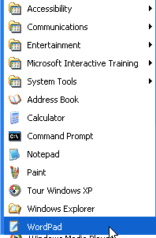
- Open Microsoft WordPad from your Start menu. It's under
the Accessories submenu. (If you're using the
Mac, then open TextEdit, which you'll find in
the Applications folder. If you're using Linux or
Solaris, use OpenOffice or some other word processor.)
- Type in a little text;"Here's a line of text from
WordPad", for instance.
- Save your file in the C:\TEMP folder, using the file
name TEXTTEST.DOC. If the C:\TEMP folder doesn't
exist, use Windows Explorer to create it. (On the
Mac or Unix, you can use the \tmp directory or your
home folder.)
- Now, open an MS-DOS window,
and display your file using the
DOS commands:
CD \TEMP
TYPE TEXTTEST.DOC
If you're using Unix or the Mac, open a Terminal or Shell window, navigate to the folder where you've saved the file, and use this command to view your text:
cat TESTTEXT.DOC
NOTE: In Windows 2000, ME, and XP, the MS-DOS window is called a
"Command Prompt" and is located on the Accessories
menu, as you can see in the screenshot. If you don't feel comfortable
using the command line, or Windows Explorer for file management, then
please work through Cay Horstmann's Windows Shell tutorial at
http://www.cs.sjsu.edu/faculty/horstman/CS46A/windows/tutorial.html.
You don't have to turn in your answers, but make sure you check your
answers against the solution I've posted on the Exercises pages.
You should see something that looks very much like one of the screenshots shown here:
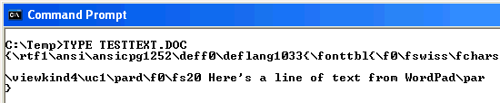
The first example, (above), shows the output of the Windows XP version of WordPad, called "Rich Text Format" or RTF. As you can see, it includes plain text along with special formatting codes.
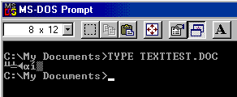
The second example, created with pre-XP version of WordPad, uses the MS Word 6 file format, and it is even less readable, consisting of nothing but "happy-face" type characters.The third example, below, shows the same file saved using the TextEdit application on the Mac, using Word format.
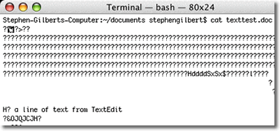
In each of these cases, your Java compiler will have a big problem if you attempt to feed it source code written using a word processor instead of a text editor, because it doesn't know how to make sense of the special formatting codes.Similarly, your Web browser expects HTML files to contain nothing but plain text and HTML formatting codes, not binary word-processor codes.
If you are still determined to use Word,
WordPad, then make sure you select Save As Text,
each time you save your document, like this:
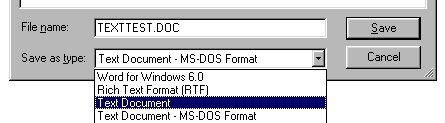
Which Editor?
Most operating systems come with a built-in text editor. In Microsoft Windows, that's the Notepad program, which is also available from the Accessories menu. Notepad is a fairly rudimentary editor, that has a tendency to rename its files, appending a superfulous ".txt" to whatever filename you specify. To avoid this, put double-quotes around your filename whenever you save a file using Notepad.
For most of this class, I'll assume that you're using the Scintilla Text Editor, or SciTE. This is my favorite editor on Windows and Linux. (On Mac OS X, you can recompile the source code and get it to run under X-Windows, but it seems kind of clunky, so I don't do that. On OS X, I use Vim or TextWrangler2, which is discussed in the Other Editors sidebar below). SciTE a an open-source, free text editor that includes syntax highlighting (for Java, HTML, and a variety of other languages) and the ability to run your compiler from within the text editor.
On the SciTE download page, I recommend the single-file download for Windows users, called Sc1.exe. This file is only about 400K, so you can easily carry it around on a floppy, a USB thumb-drive, or email it to yourself.
Other Editors
If you're serious about programming, you'll probably want to get an editor that's designed specifically for the task. You can spend a lot of money on a text editor; take a look through the ads in programmer's magazines like Dr. Dobbs' Journal. You can also get several extremely powerful editors for free, just by searching the Web.
I'm somewhat fond of the Vim [vi improved] editor, for instance, because vi is the editor I use in Unix, and I can get versions of Vim for Windows, Unix, and the Mac. On the other hand, vi is an acquired taste; many an undergraduate CS student has decided to leave the field entirely, rather than spend another minute working with vi.
Historical Note : [For those of you who are interested, vi was written by Bill Joy, one of the co-founders of Sun Microsystems, while he was an undergraduate CS major at UC Berkeley. Of course, in his spare time he also rewrote the UNIX operating system, [BSD], and later went on to found Sun Microsystems, so I guess a little editor is no big deal.]
If you're programming on the Mac, you can use the TextEditor application that came with your operating system (OSX), or you can use the free programmer's editor developed by BareBones software, called TextWrangler 2.0.
Getting Ready
Let's go ahead and set up a working environment, so that you can experiment with Java as you work though this lesson, and do the exercises this week. Here are the steps to follow:
Create a Home Directory
Use Windows Explorer to create a directory (folder) to hold your CS 170 assignments, homework and experiments. I'll call this your CS 170 home directory, or just your home folder. (On Unix or the Mac, create this folder inside your personal home directory.)
Name your home directory something like cs170home that's easy to remember, and self-explanitory so you can find it when necessary.
NOTE :You can create this inside your "My Documents" folder, but you'll have a slightly easier time if you create it so that it is accessible directly from the C:, D:, or, in the OCC Computing Center, U: drives. (You'll find that having spaces in the path sometimes makes things more difficult.)
For example, here's my CS 170 home directory (named cs170home)
on my C: drive, which I've created in a folder called docs.
This way I don't have to deal with spaces when working at the
command line:
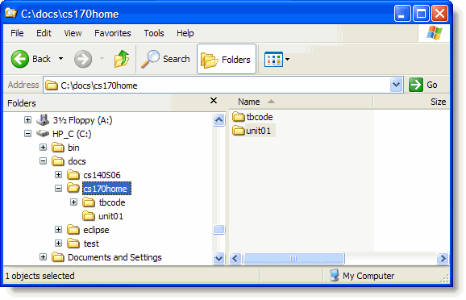
Inside your CS 170 home directory, you can create other folders as you like. For instance, in the picture I have a folder called tbcode that contains the source code for all of the programs in the textbook. I also usually create a new folder for the small programs that I write during the week. You can see the unit01 folder in the screenshot.
Editor Basics
Whichever editor you choose, you need to have some basic editing skills. I'm going to assume that you already know how to do each of the following tasks. Go through this checklist and make sure. If you don't know how to do something, then be sure and use the discussion list to see if anyone can help you out.
- Start your editor
- Add new text
- Replace some existing text with new text
- Delete text
- Cut, Copy, and Paste text
- Save your file
- Save your file using a different name
Once you've run through this checklist, you're ready to create your first Java program.
Hands-On : Your First Java Program
Other than setting up your computer's path to "point to" the folder containing the Java compiler, (javac), which you did in the last lesson, you really don't have to do anything special to use the SDK from the command line.
If you're using the Mac, of course, you don't even need to set the path variable at all. If you're using Linux or Solaris, follow the installation instructions on the Sun Website to set the path variable.
You don't even need the SciTE text editor. You can use Notepad, (or TextEdit on the Mac), to create the source code for FirstApp.java, and then compile and run it from the command line by following the steps shown here:
Step 1: Create the Source Code
- Open a DOS window, (or Command Prompt)
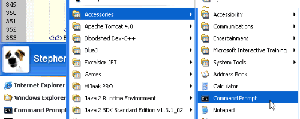
- Change to your home directory
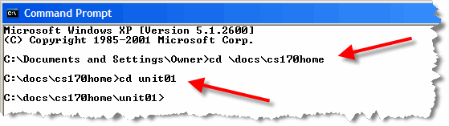
Note that in the first line, I use the cd command and that the directory name (\docs\cs170home) starts with a backslash. That means "look in the directory named docs that is located on the "root" or main directory. In the second command, the directory name (unit01) does not start with a backslash. That means "look in the current directory for unit01". Note how the command prompt itself lets me know what directory I'm working in once I've finished changing directories. - Use Notepad to create the file FirstApp.java.
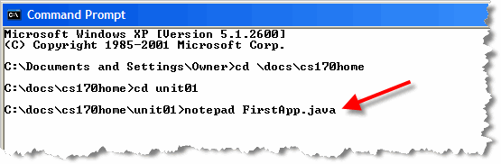
Make sure you type the command exactly as shown; case matters. Answer "Yes" when asked if you want to create the new file.
- Type the code shown below in Notepad and save your file
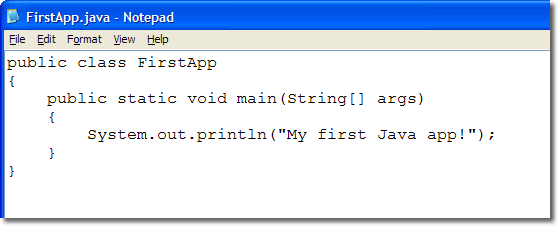
Pay close attention to capitalization in the example above. The "F" and "A" in FirstApp are capitalized, as are the "S" in String and in System. All the other letters are lower case, (except for the words inside the double-quotes.) Also, the word "println" ends in the characters el-en, not one-en.
Step 2: Compile the Code
- Save your work, and then return to the command window and
compile FirstApp.java
using the javac compiler, located in your SDK bin
directory like this:

Notice that you must use the .java extension when specifying the file to compile.
- If you didn't see any error messages, it means that all
went well. Use the dir command to make sure the
compiler created the file FirstApp.class:
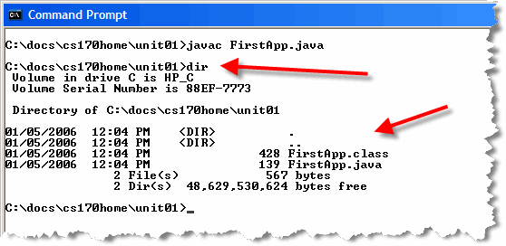
If error messages did appear on the screen, you'll need to fix the errors in Notepad, save your changes, and then compile your code again until no errors appear, and the class file is produced.
Step 3: Run the Program
- Run the FirstApp.class file by using the
java interpreter like this:
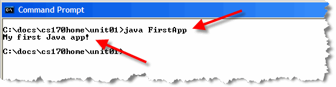
Note that when you compile your program with javac, you have to supply the full name of your Java source file, including the .java file extension. When you run your program with the interpreter, java, you don't supply the .class file extension.
You can find out by typing: echo %CLASSPATH% at the command prompt. If the system responds with anything other than %CLASSPATH%, then the classpath has been set and you'll need to "unset it" by typing SET CLASSPATH= at the command prompt and then trying to run your program again.
As an alternative, you can use the cp switch when invoking the Java interpreter. Just use java -cp ./ FirstApp to include the "current directory" (the dot, followed by the forward slash) in the program's classpath.
You can also run Java applets from the command line, by invoking the appletviewer.exe program, also located in your JDK's bin directory.
Compiling and Running with SciTE
As I mentioned earlier, you can compile and run your Java programs from within the Scintilla Text Editor, (SciTE). This works much better than using Notepad, because SciTE:
- compiles your program without leaving the editor
- allows you to click on error messages and "jump" to the offending line of code
You can compile your programs from within SciTE by following these instructions:
- If you haven't already done so, download the single-file
version of the Scintilla Text Editor,
(Sc1.exe), which is about a 400K download.
Put it in your CS 170 home folder, or on your desktop.
(Note: if you're working in the Computing Center, don't
put it on your desktop. It will be gone when you come back.)
- Double-click Sc1.exe to open the editor, and
then use File|Open, on the main menu, to open
FirstApp.java like this.
(You can use the View and Options menu to turn on
line numbers—as I've done here—or add a toolbar
with buttons instead of using the menu.)
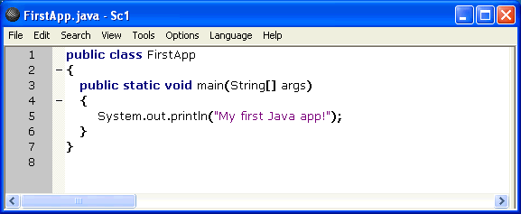
- On the Tools menu, select Compile, (or press
Ctrl-F7), and SciTE will launch the Java compiler
for you as shown here.
(You can change the compile window so that it
appears below, rather than to the side, from
the Options menu.)
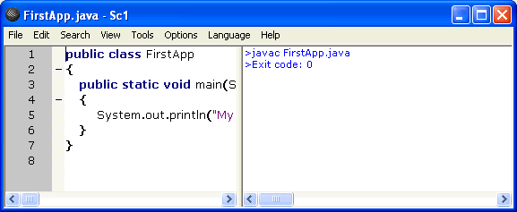
- If you've made a mistake when writing your
program, (called a "syntax error"), SciTE will
display an error message, (instead of Exit code: 0).
You can double-click the error message, as shown
here, and SciTE will place your cursor on the
offending line of code. (It won't correct the
program, of course; you'll have to do that yourself.).
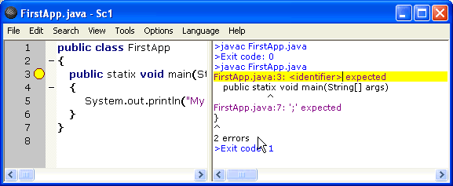
- To run your program, choose "Go" from the Tools
menu, or press F5. Your program's output will
be shown in SciTE's window as shown here:
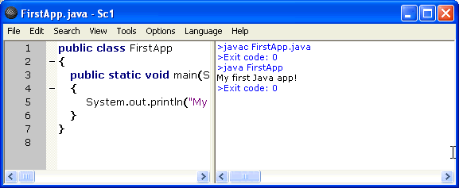
Additional Configuration
One of the nice things about SciTE is that it's highly, and easily, configurable. When the SciTE first starts up, it looks for a text file named SciTEGlobal.properties in the same directory as Sc1.exe, and it reads the settings from this file. You can find complete documentation about what goes into SciTEGlobal.properties at http://scintilla.sourceforge.net/SciTEDoc.html.
Instead of starting "from scratch", though, you can download my SciteGlobal.properties configuration file as a starting point. Just place it in the same folder as Sc1.exe, and restart SciTE. (If your browser adds an extra ".txt" on to the end of the file, then rename it back to the original name, shown here.) To make changes to the properties file, (or to simply browse through it and see what it contains), choose Open Global Options File from the Options menu.
Along with the configuration file, you may want to download and install the Artistic Style reformatting program to automatically indent your code. You can get the program from SourceForge. Download the Windows binary version, and install astyle.exe in the same folder as Sc1.exe.
Exercise
Open up the program FirstApp.java from this lesson, and try out a few experiments. Then tell me what happens when you:
- Change the word
mainin FirstApp.java toMain. Does the program compile? If not, what error messages do you get. If it compiles, can you run it? - Change the program back and then change the file name to FirstApplication.java using Windows Explorer. Does the program compile? If not, what error messages do you get. If it compiles, can you run it?
- Change the file name back and then change the word "FirstApp" to "Firstapp", (lowercase a). Does the program compile? If not, what error messages do you get. If it compiles, can you run it?
- Change the file name back and then change the word "args" to "ARGUMENTS", in the third line. Before you try, make a guess; do you think that the program will compile? If it does, do you think it will run?
- Try it and see. Does the program compile? If not, what error messages do you get. If it compiles, can you run it?